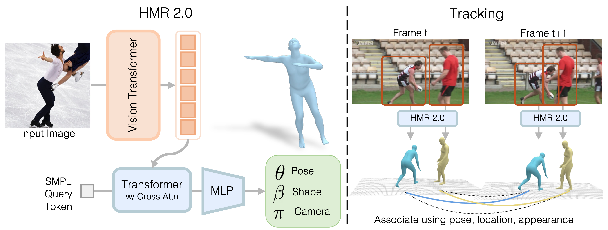

We present an approach that, given any video in the wild, can jointly reconstruct the underlying humans in 3D, and track them over time.
Here, we show the input video on the left, and the reconstructed humans on the right, wihtout any temporal smoothness, with colors indicating track identities over time. Our approach works reliably on usual and unusual poses, under poor visibility, extreme truncations and extreme occlusions.
Abstract
We present an approach to reconstruct humans and track them over time. At the core of our approach, we propose a fully "transformerized" version of a network for human mesh recovery. This network, HMR 2.0, advances the state of the art and shows the capability to analyze unusual poses that have in the past been difficult to reconstruct from single images. To analyze video, we use 3D reconstructions from HMR 2.0 as input to a tracking system that operates in 3D. This enables us to deal with multiple people and maintain identities through occlusion events. Our complete approach, 4DHumans, achieves state-of-the-art results for tracking people from monocular video. Furthermore, we demonstrate the effectiveness of HMR 2.0 on the downstream task of action recognition, achieving significant improvements over previous pose-based action recognition approaches.
Approach

Left: HMR 2.0 is a fully "transformerized" version of a network for Human Mesh Recovery, containing a ViT and a cross-attention-based transformer decoder.
Right: We use HMR 2.0 as the backbone of our 4DHumans system, that builds on PHALP, to jointly reconstruct and track humans in 4D.
Results
Comparisons to existing approaches
We present comparisons to previous state-of-the-art approaches (PyMAF-X and PARE) for lifting humans to 3D. HMR 2.0 reconstructions are temporally stable, and are better aligned to the input video. The baselines have a lot of jitter and sometimes even fail completely on hard poses or unusual viewpoints.
Side-View Visualizations
Here, we visualize the reocnstructed mesh from a novel view, in addition to the camera view. HMR 2.0 reconstructions are plausible and temporally stable, even when observed from a novel view, despite it being per-frame 3D reconstruction without temporal smoothness.
Acknowledgements
This research was supported by the DARPA Machine Common Sense program, ONR MURI, as well as BAIR/BDD sponsors. We thank members of the BAIR community for helpful discussions. We also thank StabilityAI for their generous compute grant. This webpage template was borrowed from some colorful folks. Music credits: SLAHMR